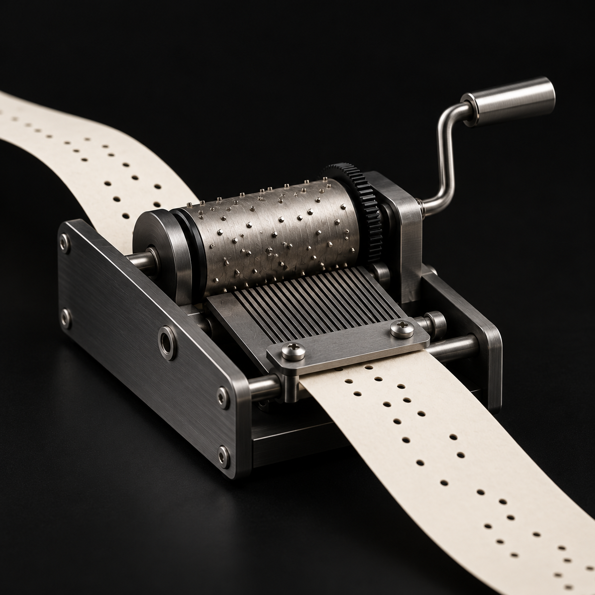
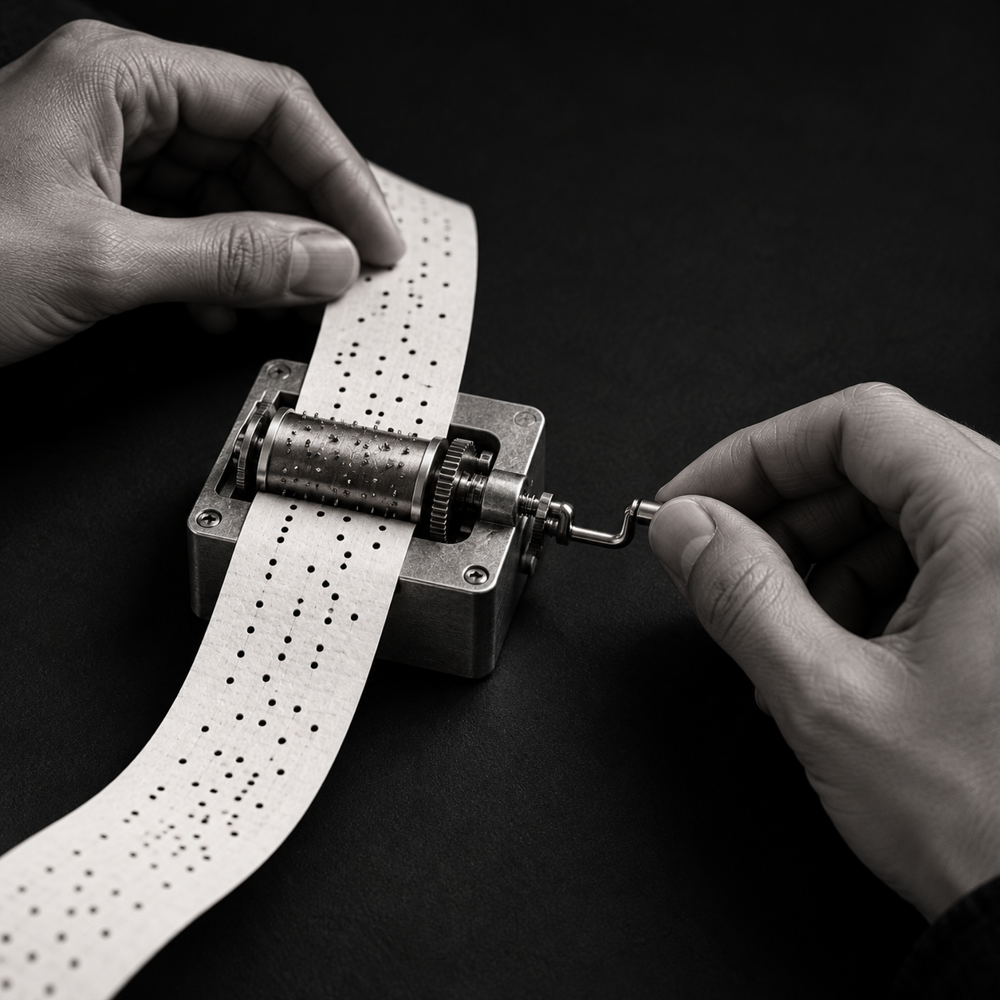

01 / 04
손으로 쓰는 시간이 줄어들고 있습니다
화면을 누르는 일은 늘었지만 종이에 글씨를 남기는 경험은 줄었습니다. ORGO는 손으로 쓰는 과정 자체를 다시 흥미로운 경험으로 만들고 싶었습니다.
글씨는 결과가 아니라 손이 지나간 시간의 기록입니다HANDWRITING / SOUND / OBJECT
당신의 글씨가 노래가 됩니다
손으로 쓴 선을 소리로 바꾸는 음악 웹사이트 ORGO
종이 위에 한 문장이나 자유로운 선을 남겨보세요.
글씨 위에서 실제로 연주될 지점을 직접 선택합니다.
완성된 종이를 연주하고 나만의 곡으로 저장하세요.
SOUND LAB / PLAYGROUND
정답은 없습니다. 누르고, 끌고, 구기고, 두드리며 손끝에서 달라지는 소리를 찾아보세요.
첫 번째 소리 만져보기 ↓앞면이 나타나면 빨간 버튼으로 최대 6초 동안 목소리를 녹음하고, 가운데 큰 재생 버튼으로 바로 들어보세요.
파형과 리듬을 직접 조작하는 전자음악 실험실입니다.
PRESS + SCRUNCH 누른 채 문지르면 주름과 소리가 쌓입니다.
TOUCHES
DRAG A STRING 줄을 끌었다 놓아 저음을 울려보세요.
E GPLAY THE KIT 각 파트를 두드리고 왼쪽 페달도 밟아보세요.

PLAY WITH TEN FINGERS 양손을 올리고 손가락을 건반 쪽으로 내려 눌러보세요.
카메라를 켜고 양손으로 건반을 눌러보세요.
패드를 누르거나 재생 버튼을 눌러보세요.
ORGO는 사라져가는 손의 감각을 글씨와 음악으로 다시 이어봅니다.
화면을 누르는 일은 늘었지만 종이에 글씨를 남기는 경험은 줄었습니다. ORGO는 손으로 쓰는 과정 자체를 다시 흥미로운 경험으로 만들고 싶었습니다.
글씨는 결과가 아니라 손이 지나간 시간의 기록입니다
선의 위치를 시간과 음높이로 바꾸고 원하는 지점을 펀칭해 하나의 멜로디로 만듭니다. 쓰는 행위가 듣는 경험으로 이어집니다.
내가 쓴 선이 실제로 재생되는 악보가 됩니다완성된 글씨는 아카이브에서 둥둥 떠다닙니다. 다른 사람의 글씨를 구경하고 눌러서 음악을 들으며 낯선 손글씨를 만나는 즐거움을 느낄 수 있습니다.
보고 듣는 경험이 다시 쓰고 싶은 마음으로 이어집니다
직접 체험하는 일이 줄어드는 세상에서 손으로 선을 그리고 카메라 앞에서 악기를 연주하고 손잡이를 돌려 듣는 감각을 되살리고자 했습니다.
음악을 듣는 사람에서 직접 만드는 사람으로 직접 써보고 연주하기